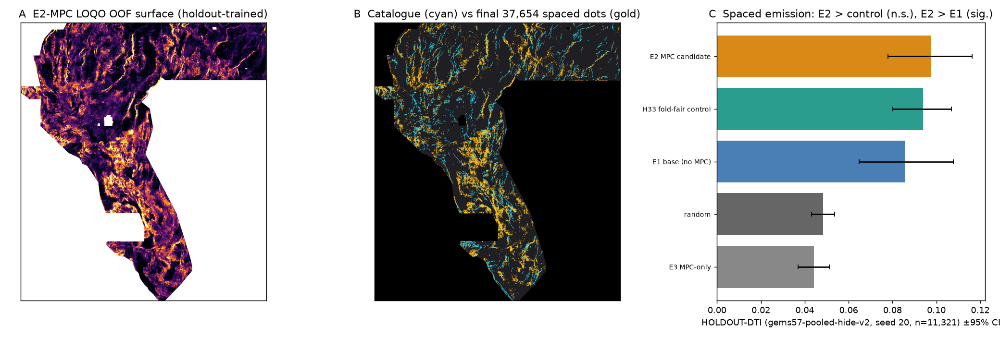

← Primary lane H78-A (home) · This page is the independent H78-MPC second candidate (mutual 3-px dot overlap vs the H78-A primary = 0.3552; selector guidance in README).
Core Values. Maximize P(Win) — every weekly slot is an experiment gated by a preregistered holdout, not a lottery ticket. Own the Outcome — the emission defect found in our own Pass 1 (IR-78-EMIT-01) is measured, published, and corrected below, not hidden.
Scoring law (organizer-published; re-derived and unit-tested in vendor/gems57/metric.py):
DTI = TPw/(TPw+0.2·FPw+0.8·FNw), 300 m triangular kernel. For binary dots,
one more non-redundant dot raises DTI iff its kernel credit k > 0.2·DTI — at 0.2778 the bar is
0.0556 credit/dot. DTI is a budget: credit density at the emitted mass decides everything.
H33's ladder (all live scores = user-reported submission-page receipts): continuous parent h19-5
(multi-lineament-corroborated) 0.1922 → dotted d1.5 0.2477 → dotted d2.8 0.2600 → solo re-emit 0.2708 →
+B=2 catalogue-flank prune 0.2778 (37,654 dots). Three multiplicative ingredients: parent credit density,
kernel-matched ~2.8 px dotted spacing, and deleting zero-credit near-catalogue mass (the organiser masks mapped
faults pixel-exactly). Full forensic ledger: docs/why-h33.md.
Beating it requires higher credit density in the top 37,654 cells — a better ranking, not a better thinning (the user-reported 0.4413 leaderboard top implies ≈59% more credit/dot than H33's parent). This lane contributes one measured ranking improvement: monogenic phase-congruency features raise holdout DTI by a significant paired +0.0121 over an identical 48-band stack without them, and lift the surface AUC vs withheld faults 0.674 → 0.696. That is a building block toward 0.4413, not a claim of reaching it.
Hypothesis. Catalogue-missing blind faults have weak gradient amplitude — what HGM/tilt/worm/Blakely/Steger/radon
lanes (all tried, live ≤0.16 as pure lanes) key on — but retain a coherent local-phase step across scales.
Phase congruency from the Riesz-transform monogenic signal is contrast-invariant, targeting exactly those edges.
Mimic: lithologic contacts and flight-line seams. Method: 32 MPC-family features (σ=1/2/4 on RTP, isostatic gravity,
detrended elevation, depth-to-basement + Frangi) over a 48-band base; leave-one-quadrant-out gradient boosting trained
only on visible catalogue; spaced (2.5 px) emission of exactly 37,654 dots, min catalogue distance 2.83 px, 0 on-catalogue.
Five ranked hypotheses were preregistered before Experiment 1 (docs/research-hypotheses.md,
registry/preregistration_h78_mpc.json).

gems57-pooled-hide-v2, seed 20, 11,321 withheld positivesWhole fault components hidden with a 3 px feature buffer; every catalogue-based input derived from visible faults only;
visible faults masked pixel-exactly; pooled DTI α=0.2 β=0.8 R=300 m. Instrument identity verified this run: control
h33_analogue_foldfair = 0.0939 and random 0.0484
match the values published by GEMSDOE73/GEMSDOE77 on the identical instrument.
| Arm (spaced emission, IR-78-EMIT-01 corrected) | HOLDOUT-DTI | 95% CI |
|---|---|---|
| E2_MPC_SPACED | 0.0977 | [0.0780, 0.1163] |
| h33_analogue_foldfair | 0.0939 | [0.0801, 0.1069] |
| E1_BASE_SPACED | 0.0856 | [0.0648, 0.1078] |
| random_control | 0.0484 | [0.0431, 0.0537] |
| E3_MPC_ONLY_SPACED | 0.0442 | [0.0369, 0.0511] |
Paired: E2−E1 +0.0121 [0.0027, 0.0217] (significant — the MPC effect); E2−control +0.0038 [-0.0120, 0.0200] (not significant); E2−random +0.0493 [0.0303, 0.0678].
evidence/h78mpc_experiments.json). Pass 2 re-emitted the frozen surfaces with the control's spaced emitter — no retraining —
and the MPC paired effect is significant under both emitters. The superseded clustered production file
(sha256 28dd7adf9bf717e3…) was withdrawn.| Arm (Pass-1 clustered emitter — defective) | HOLDOUT-DTI | 95% CI |
|---|---|---|
| E2_MPC | 0.0471 | [0.0291, 0.0668] |
| E1_BASE | 0.0366 | [0.0183, 0.0573] |
| E3_MPC_ONLY | 0.0128 | [0.0078, 0.0183] |
| random_control | 0.0484 | [0.0431, 0.0537] |
| h33_analogue_foldfair | 0.0939 | [0.0801, 0.1069] |
Leakage canaries (before any fitting): all 80 features alone vs catalogue & withheld truth; max symmetric AUC 0.6105 ≤ 0.90 — PASS. Top MPC-family rows:
| Feature | AUC cat | AUC withheld | Symmetric | Gate |
|---|---|---|---|---|
frangi_det_elev_dark | 0.583 | 0.581 | 0.583 | PASS |
mpc_det_elev_amp3 | 0.554 | 0.541 | 0.554 | PASS |
mpc_det_elev_amp2 | 0.550 | 0.540 | 0.550 | PASS |
mpc_iso_grav_anom_amp3 | 0.549 | 0.518 | 0.549 | PASS |
mpc_iso_grav_anom_amp2 | 0.547 | 0.516 | 0.547 | PASS |
mpc_iso_grav_anom_amp1 | 0.546 | 0.518 | 0.546 | PASS |
mpc_det_elev_amp1 | 0.546 | 0.541 | 0.546 | PASS |
mpc_depth_to_base_surf_amp2 | 0.542 | 0.527 | 0.542 | PASS |
mpc_depth_to_base_surf_amp3 | 0.542 | 0.527 | 0.542 | PASS |
frangi_det_elev_bright | 0.462 | 0.473 | 0.538 | PASS |
Uniqueness (checked on the surface before placement AND on final dots): 74 unique registry rasters
(GEMSDOE32/36/70/73 downloads + restored scored set), 71 informative. Pre-placement max |Spearman ρ|
(300k-cell fixed-seed sample) = 0.1546 ≤ 0.90; final dots worst mutual 3-px overlap =
0.4879 ≤ 0.70 (preregistered criterion). Forward-only readings exceed 0.70 only vs the
206,895-dot lattice witness (3-px halo = 99.9% of footprint — vacuous) and one 54,000-dot raster (forward 0.73,
mutual 0.42); every row is in evidence/h78mpc_uniqueness.json.
| Registry raster (worst mutual) | Their dots | Fwd 3px | Rev 3px | Mutual | Their halo/footprint |
|---|---|---|---|---|---|
gems70-p5-multiphysics-submodular-37654-20261020.tif | 37,654 | 0.5059 | 0.4879 | 0.4879 | 0.138 |
gems73-crossdrain-unet-submod-37654-20261021-nan.tif | 37,654 | 0.5382 | 0.4607 | 0.4607 | 0.156 |
gems73-crossdrain-unet-submod-37654-20261021.tif | 37,654 | 0.5382 | 0.4607 | 0.4607 | 0.156 |
gems73-h73m-regime-cokrig-submod-37654dots-20261021-nan.tif | 37,654 | 0.6287 | 0.4371 | 0.4371 | 0.183 |
gems73-h73m-regime-cokrig-submod-37654dots-20261021-zeros.tif | 37,654 | 0.6287 | 0.4371 | 0.4371 | 0.183 |
gems73-h73-2-mecs-autoctx-submod-37654dots-20261021-nan.tif | 37,654 | 0.4862 | 0.4215 | 0.4215 | 0.154 |
Format validator (re-read from disk): all checks PASS — see receipt: single-band float32, EPSG:32611, 3730×3292, transform = sample submission, 12,279,160/12,279,160 cells finite in [0,1], 0 NaN, nodata=None, values exactly {0,1}, 37,654 dots, 0 on catalogue, 0 outside footprint. Local format/range preflight — not organiser acceptance.
Machine-readable run card (JSON) · Evidence in repo:
evidence/h78mpc_experiments.json, evidence/h78mpc_experiments_pass2_spaced.json, evidence/h78mpc_canaries.json,
evidence/h78mpc_uniqueness.json. Reproduce: python3 scripts/restore_data.py (sha256-verified)
→ build_features.py → run_experiments.py → pass2_spaced_emission.py →
build_production.py → pass2_rebuild_production.py. Tests: pytest tests -q.
Official sources: DrivenData #306 problem description · GEMS Prize rules (NLR FY26OSTI-96647) · organiser reference solution · USGS GeoDAWN · GDR 1391 INGENIOUS · EPSG:32611 · Kovesi, phase congruency · Felsberg & Sommer 2001, monogenic signal.